DesktopIniManager v4.5.6
操作マニュアル
導入・更新
Windows 10 / 11（x64）、.NET 10 Desktop Runtime（x64）が必要です。GitHubの配布ZIPはDesktopIniManager-v4.5.6-win-x64.zip、Vector向けは32byte制限のためDIM-v4.5.6-win-x64.zipです。ZIPを新しいフォルダーに展開し、DLL、JSON、Assets、Languagesを維持してDesktopIniManager.exeを起動します。
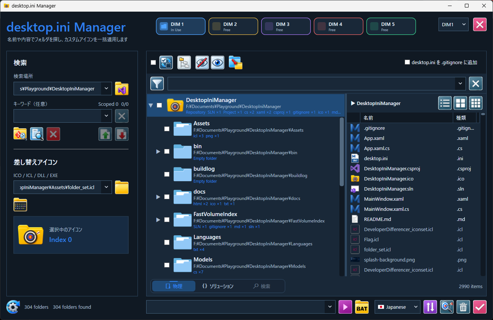
メイン画面・フォルダー解析
Targetに物理フォルダーまたはSolutionを指定します。選択フォルダー直下のファイルを白文字で先に表示し、配下のファイルを灰色で表示します。ルートが1つのツリーではルート行を固定表示します。全チェック／解除、反転、展開／折りたたみ、フィルター、表示サイズ変更に対応します。
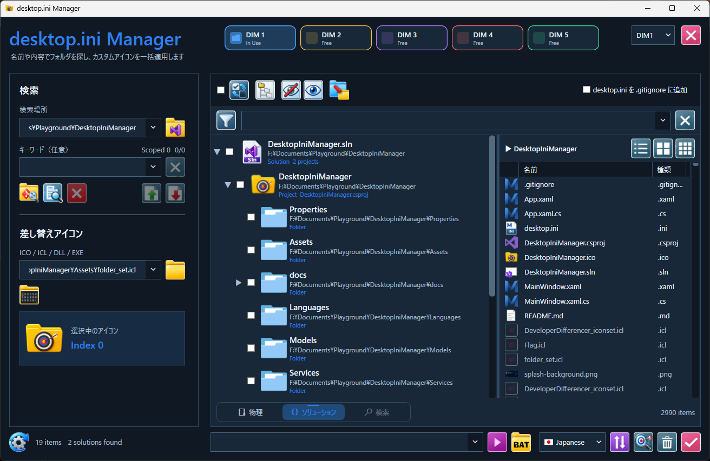
ファイル検索
ファイル名とフォルダー名を検索対象とし、ヒットの強調と件数表示に対応します。チェックしたフォルダー配下をScoped File Search／Scoped Grepの対象にできます。複数ファイル選択とDIFF VIEWでの比較に対応します。
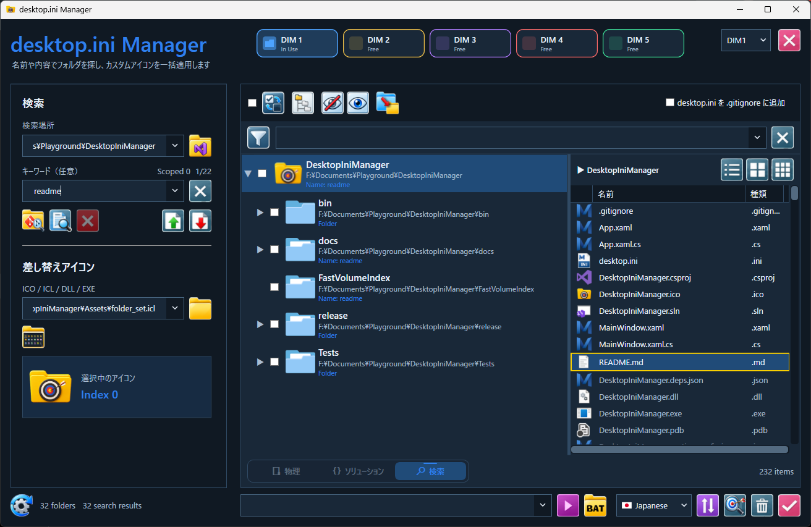
desktop.ini・アイコン管理
ICO／ICL／DLL／EXEからアイコンを選び、チェックしたフォルダーへ適用します。既存設定のリセット、.gitignoreへの追加、空／中身あり・ネットワーク・クラウドの状態表示に対応します。
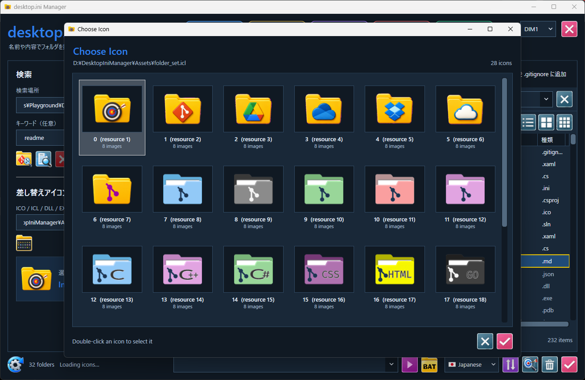
右クリック・Batch File Launcher
右クリックからTarget設定、Explorer表示、tree／tree /f／ファイルリストのエディター出力、Scoped Grepへの引き渡しができます。Batch File Launcherの置換文字は%d%（ディレクトリのフルパス）、%f%（選択ファイルのフルパス）、%n%（ファイル名）です。
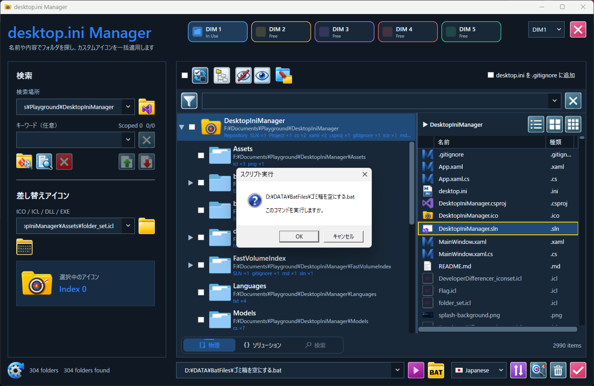
Developer Differencer
Source（黄色）とTarget（青色）のフォルダーを比較します。日時・容量・ATTR（BOM）・XXH128を個別にON／OFFできます。日時・容量・ATTRはONの項目を独立して判定し、日時・容量で差分があってもATTRがONならBOMを確認します。片側のみのファイル、または先行する有効な項目で差分が確定したファイルはXXH128を計算しません。XXH128だけONの場合は両側に存在するファイルをハッシュ比較します。同一・差異あり・片側のみ・obj・bin・チェック済みをフィルター表示します。比較結果は最大20タブです。Source選択時はTarget側に同名の末尾フォルダーがあれば選択します。
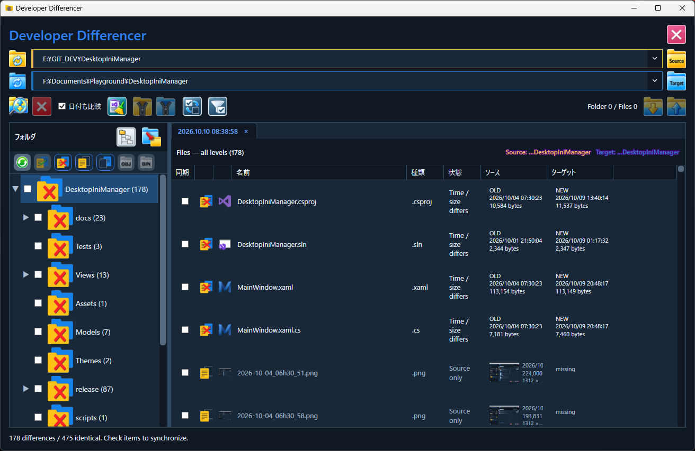
同期・ZIP保存
選択したSource／Targetのファイルを相対構造を維持してZIP保存できます。ZIPアイコンをドラッグするとZIPを作らず構造ごと取り出せます。同期は双方向で、確認画面で方向と内容を確認して実行します。受信側ファイルが削除される場合があります。
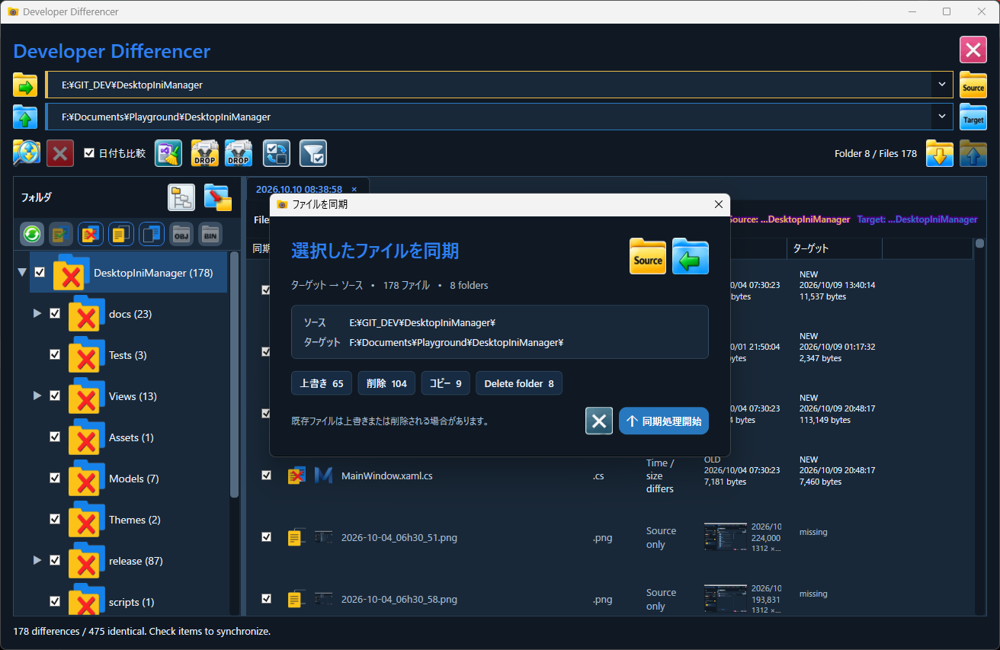
テキストDIFF VIEW
比較結果の対応ファイルをダブルクリックして開きます。Sourceは黄色枠、Targetは青枠。行番号、シンタックスハイライト、中央の差分マップに対応します。「≠」で差分のみ表示、「※」で全行表示に戻します。省略部分は「52 filtered lines」などと表示し、クリックで展開／折りたたみできます。Ctrl+0でも切り替え、最終状態をスロットごとに保存します。編集・マージは外部ツールで行います。
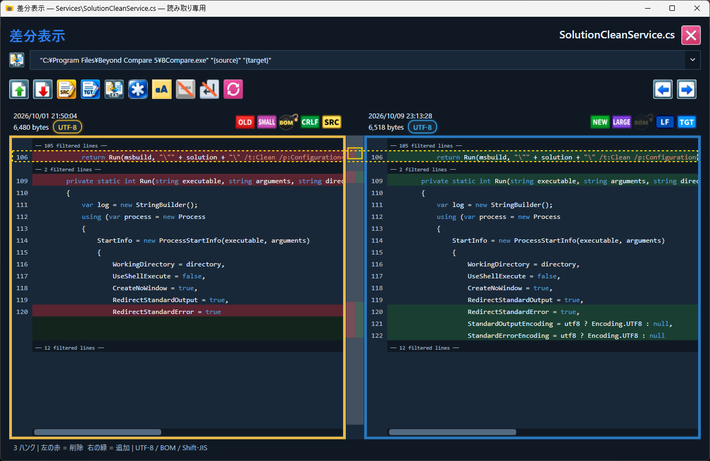
画像DIFF VIEW
BMP／JPG（JPEG）／PNG／GIF／TIFF（TIF）の画像を左右に表示します。最近傍補間で5～1600％まで拡大縮小し、1600％でピクセルグリッドを表示します。ポインター位置の座標とARGB値を表示し、Source／Targetごとに元画像とXOR表示を切り替えられます。アニメーションGIFはフレーム選択スライダーで静止フレームを比較できます。
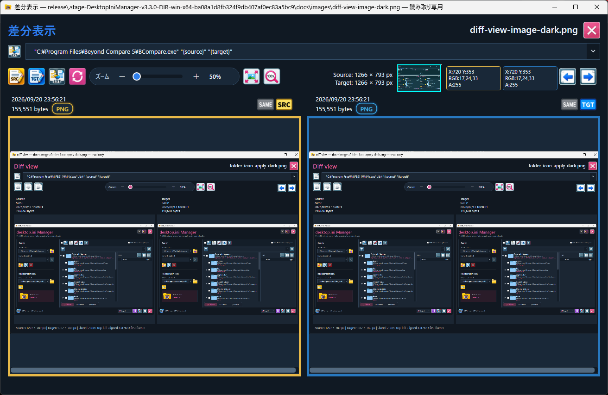


動画DIFF VIEW
v4.5.6：Source／TargetごとにDelay（ディレイ）を0.1秒単位で指定できます。正の値は再生開始を遅らせ、負の値は先に進めます。左右独立の音量／ミュートと、0.5／0.75／1.0／1.5／1.75／2.0倍の再生速度切替に対応します。再生中に共通シークバーをドラッグすると一時停止し、離した位置から再生を再開します。短い動画はその再生時間を超えない位置に制限します。音声トラックがない動画の音量操作は非活性です。

MP4動画をSourceとTargetの左右2画面で比較します。再生ボタンと共通シークスライダーで表示位置を移動でき、ズーム操作も利用できます。

音声DIFF VIEW
v4.5.6：Source／Targetそれぞれの波形上にある再生カーソルを左右にドラッグすると、その側のDelayを直接変更できます。ディレイは0.1秒単位で、ヘッダーのDelay数値欄・スピナーと連動します。正の値は遅延、負の値は先行です。再生中のカーソルドラッグでは一時停止し、終了時に再生状態を復元します。

音声ファイルの1時間制限を撤廃し、ドラッグ＆ドロップや貼り付けでも長時間音声を扱えるようにしました。差分解析をバッファ付き逐次デコード方式に最適化し、初回の差分表示ON時にバックグラウンドで計算します。解析中はテーマに合わせた待機オーバーレイを表示し、計算結果はキャッシュしてON／OFF切り替えで再利用します。横方向ズームは表示左端を基準に右方向へ拡大・縮小します。
音声差分比較（フィットボタン右の143番アイコン）をONにすると、PCMから検出した差異のある区間を赤く強調表示します。OFFでは通常のSource／Targetカラー表示に戻ります。波形は再生前を暗め、再生済みを通常の色で表示します。上部マップは録音全体を表示し、拡大時はスクロールバーやドラッグで表示位置を移動できます。波形クリックまたはシークスライダーで再生位置を確定します。ドラッグスクロールでは再生位置を変更しません。

WAV／MP3音声をSource（黄色枠）とTarget（青枠）の上下2画面に波形表示します。モノラルは1チャンネル、ステレオは2チャンネルで表示します。共通の再生・シーク位置表示と左右それぞれの音量調整・ミュート操作を備えます。


音源リソースの変更箇所を確認するための波形差分表示です。単に2つの波形を並べるだけではなく、デコードしたPCMサンプルを共通の時間軸上で比較し、差異を検出した区間を赤色で描画します。サンプルレートが異なる場合は高い方の時間グリッドに合わせてリサンプリングし、チャンネルの欠落や末尾の長さの差も検出対象にします。これは音声認識・周波数解析などの高度な音声解析ではなく、その手前で音源リソースの差異を可視化する機能です。
上部マップで全体と現在の表示範囲を確認し、ガイド枠をドラッグして表示位置を移動できます。A–B区間のリピート再生、Source／Targetの同期再生と個別音量調整に対応します。再生速度は0.5／0.75／1.0／1.5／1.75／2.0倍の6段階から排他的に選択でき、初期値は1.0倍です。選択中のボタンは明るく、その他は薄く表示されます。
Git difftool連携
DIMは -diff に2ファイルを渡して単体起動できます。以下はGitの .gitconfig 設定例です。DesktopIniManager.exeがPATHにない場合はフルパスに置き換えます。
DesktopIniManager.exe -diff "C:\work\Source.txt" "C:\work\Target.txt"
[diff]
tool = dim
[difftool "dim"]
cmd = DesktopIniManager.exe -diff "$REMOTE" "$LOCAL"
[difftool]
prompt = false
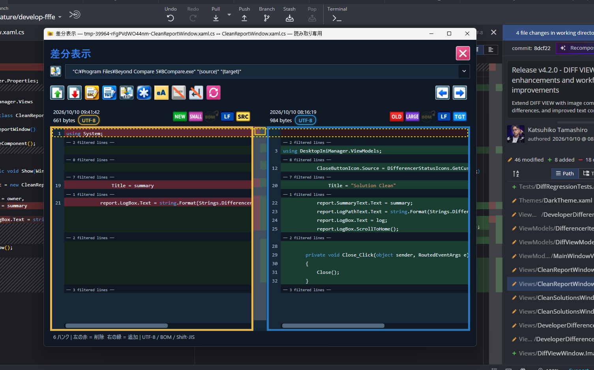
Scoped Grep
複数の検索フォルダーを登録し、チェックで対象を選択します。正規表現、大文字小文字、単語一致に対応します。Code GrepとDocument Grepを分離し、DocumentではExcel（xls／xlsx／xlsm）とPDF内部を検索します。Excelはシート名とセル番地、PDFはページ番号を表示します。スキャンPDFのOCRは行いません。結果はファイル単位でグループ化し、最大20タブ保持します。
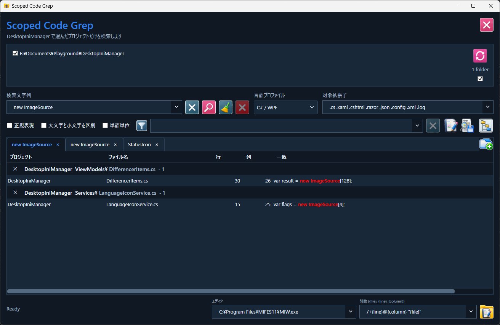
スロット・テーマ・言語
DIM1～DIM5は独立プロセスで、In Useは現在使用中、Freeは新規起動可能、Openは別プロセスを前面表示します。設定と履歴は%LOCALAPPDATA%\DesktopIniManager\dim-Nに保存します。Dark／Light／DIM1～DIM5テーマ、英語・日本語・簡体字中国語・韓国語に対応します。
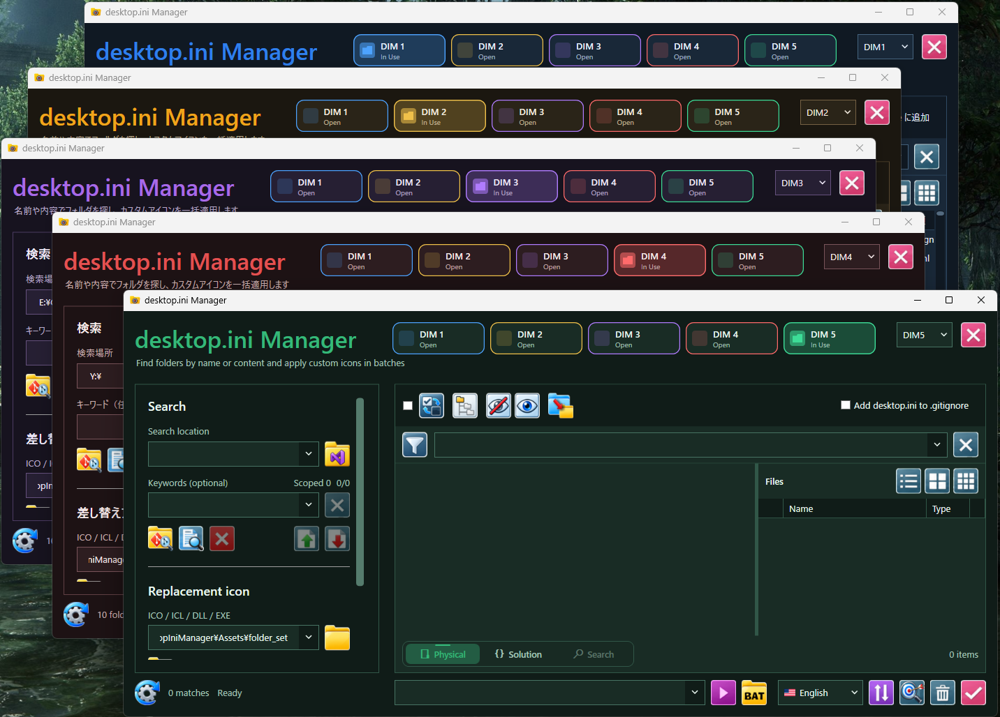
キーボード操作・起動オプション・バッチランチャー
| 操作 | 動作 |
|---|---|
Ctrl + 1
|
メイン画面へ切り替え |
Ctrl + 2
|
Developer Differencerへ切り替え |
Ctrl + 3
|
Scoped Grepへ切り替え |
Ctrl + 4
| 単体DIFF VIEWを起動（起動済みなら前面へ切り替え） |
Ctrl + Space
|
メイン → Developer Differencer → Scoped Grepを順番に切り替え。DIFF VIEWが開いていれば、すべてのDIFF VIEWも切り替え対象に参加 |
Ctrl + 0
|
DIFF VIEWの全行表示／差分のみ表示を切り替え |
↑ ↓ ← →
|
DIFF VIEWを上下左右へスクロール |
Ctrl + ↑ / ↓
|
前後の差分セクションへ移動 |
Ctrl + ← / →
|
前後の差分ファイルへ移動 |
Page Up / Page Down
|
ページスクロール |
Shift + ホイール / サムホイール
|
横スクロール |
-diff | ファイル指定なしで空のDIFF VIEWを単体起動。ドラッグ＆ドロップ対応。1ファイルはドロップした側、2ファイルは順にSource／Targetへ取り込み |
-diff Source Target | 指定した2ファイルでDIFF VIEWを単体起動。空白を含むパスは二重引用符で囲む |
-d1 / -d2 / -d3 / -d4 / -d5 | DIM1／DIM2／DIM3／DIM4／DIM5を指定して起動。使用中のスロットを指定した場合は通知して終了。省略時は空きスロットを自動選択 |
%f% | バッチランチャー：選択ファイルのフルパス |
%d% | バッチランチャー：ディレクトリのフルパス |
%n% | バッチランチャー：ファイル名 |
アンインストール・注意事項
DIMをすべて終了し、展開先フォルダーを削除します。設定も削除する場合は%LOCALAPPDATA%\DesktopIniManagerを削除します。フォルダーアイコンは事前にDIMでリセットしてください。走査・検索・比較・閲覧はファイル内容を変更しませんが、同期、アイコン設定、ビルド／Cleanなどは書き込みを伴います。